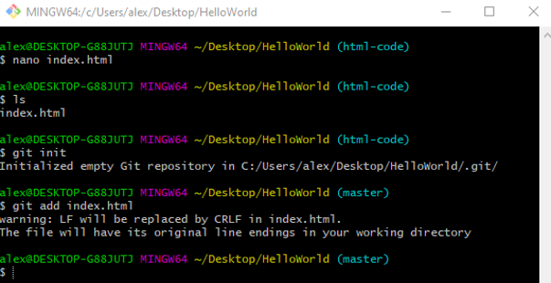
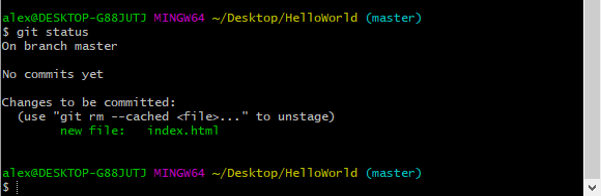
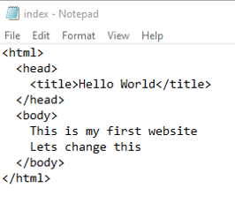
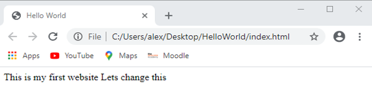
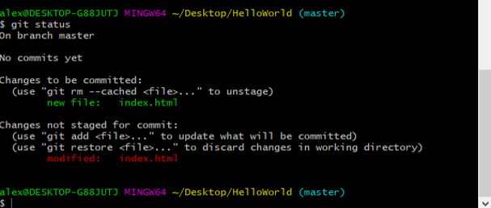
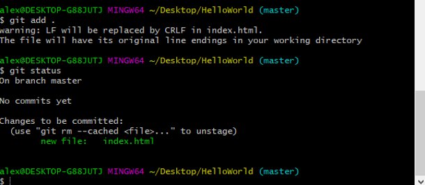

Stage and Commit
Stage
We need to stage the files before we can commit them. to stage index.html use git add and the file name.
We can check if git put our files in the staging area with git status

Yay it worked index.html is there waiting in the staging area for us to decide when to commit it or change our minds and unstage it git even tells you how to unstage it if you want to with git rm. Now it is in the staging area git will start to track it and keep a record of any changes.
If we make changes to our file while it is in the staging area we will need to add it again.

Git status shows index.html has been modified and gives us an option to add it to the staging area again with git add or discard the changes with git rm.
If we had lots of files with different extensions we can stage them all at the same time with git add . this also works when there is just one file. Now it is back in the staging area.
Commit
To commit we need to use git commit and to add a comment to the commit we also need to add -m “message goes here” ie git comit -m “initial commit”.
If you just type git commit with no comment it will either save your commit without a comment so you wont know what it is if you ever need it in the future. Or open a vim editor for you to add a comment in vim you will have to:
- Type I to get into insert mode.
- Enter your comment.
- Escape to get out of insert mode.
- Type :wq to exit the vim editor.
when we check the status git confirms that everything has been committed and nothing else is waiting to be committed.